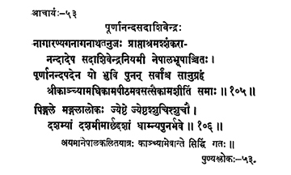

53. आचार्य - 53 - पूर्णानन्दसदाशिवेन्द्रः
नागारण्य ••• समाः ॥ १०५ ॥
पिङ्गले ••• धाम्न्यपुनर्भवे ॥ १०६ ॥
अय्ं ••• गतः ॥
This preceptor Sadāśivendra, son of Nāganātha of Nāgāraṇya, having got initiation into asceticism from Śaṅkarānanda, with the title Pūrṇānanda, adored by/revered by the King of Nepal, sanctifying all on earth with grace, he stayed at the Kāmapīṭha in Kāṅci for eight-one years.
The auspicious, revered, pure preceptor merged in the beatitude devoid of rebirth on the tenth day of the bright fortnight of Jyeṣṭha month in the year Piṅgala.
This preceptor who went upto Nepal attained Siddhi in Kāṅci itself.
